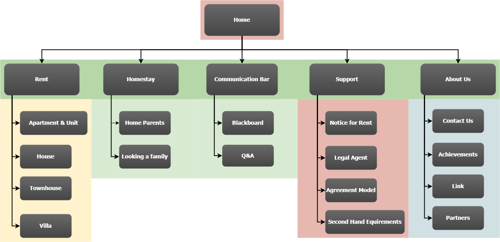

Members:
Rental Property listings website
The following project would focus on designing a website for rental property listings to enable students and any other property seekers to be able to find houses, flats and apartments for lease.
The main goals of the following website would be to:
- To develop a responsive website providing a user friendly search mechanism for displaying and finding rental accommodation for students in Australia with focused budget friendly accommodation options.
– For example,
• Make rental website accessible online.
• Enable prospective guests to register as renters
• Enable prospective guests to register as agents
• Enable individuals to update their member data.
• Provide accommodation by area, suburb
- Proper navigation assistance for users
- Simple and easy to use page layout
- Clear contact details
• Front end requirements: Tools?, Languages?
We could use HTML for texts that contains links, jQuery, GitHub or even chrome developer tools for markup languages.
• Back end requirements: Tools?, Languages?, Database?
Scripting languages like PHP or Python can be used and My SQL for querying for databases.
• List main functions or tasks or pages
The main functions for this page would be to direct the user to choose a suitable accommodation for their needs as a student, comparing prices and conveniences. The options for each choice will be depicted in description. A search button and other links would assist the user to get to where result as well.
• A site diagram (or blueprint)
– defines the site structure, identifies all pages within the site, and shows the pathways linking each page. Its purpose is to organize the development of the site, and should be easily visible to all members of the team (see Chapter 03 http://webstyleguide.com/wsg3/index.html).
It provides a skeletal structure to the idea of the final result of the web site design and will be used to rectify page errors if any and will be used to guide the site creation.

https://github.com/jc444921/ProjectFirstStage.git
?
• Identify the strengths and weaknesses of each member
Tina - Well versed about software tools for web development
Dinithi - Punctual and meets deadlines
Andrew - Experienced in creating a website himself with a similar structure
• State and justify who in charge of what
where is Shemal??
• Identify the major milestones of the project
Friday 10am - the submission of the blueprint of the website
• Indicate when each milestone should be achieved